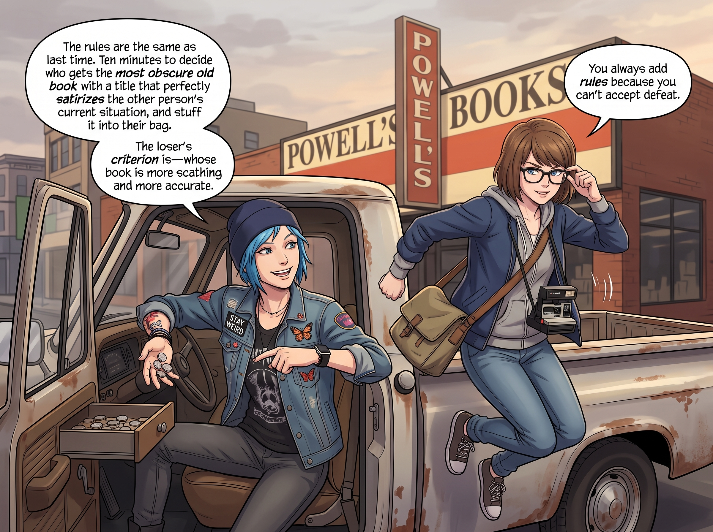

書名與橋下的一整天

週日下午，Chloe 把老皮卡停在鮑威爾書店外的路邊，熄火前還不忘從儀表台抽屜裡摸出一把備用硬幣。
「規則跟上次一樣，」她咧嘴一笑，指了指手錶，「解散十分鐘，找一本書名能精準嘲諷對方現狀的冷門舊書，塞進對方包裡。輸的標準是——誰的書更狠、更準。」
「妳每次都輸不起才臨時加規則。」Max 推了推眼鏡，已經拉開車門跳下車，帆布相機包在肩上晃了兩下。
「走著瞧，長官。」
一、書名暗殺
書店裡瀰漫著舊紙張和咖啡的氣味，兩人一進門就各自散開，消失在高聳的書架迷宮裡。
Max 先在心理學區找到了目標——她盯著書脊上那行字，忍不住偷笑出聲，快步走向搖滾傳記區。Chloe 正蹲在地上翻一本傳記，完全沒注意到身後靠近的腳步。Max 屏住呼吸，把那本薄薄的《如何克服衝動型人格障礙與多動傾向》悄悄滑進她皮夾克的大口袋，隨即若無其事地轉身走開。
五分鐘後，輪到 Chloe 反擊。
她在文學區角落找到了一本厚重的舊書，翻開扉頁確認了書名沒問題後，貓著腰摸到攝影區——Max 正背對著她，專心翻著一本畫冊。Chloe 咧嘴壞笑，從後面一把摟住 Max 的腰，趁她驚呼出聲的空檔，飛快地把那本書塞進她相機包的側袋，還順手抽出剛才那本被塞進自己口袋的《人格障礙》舉在半空搖了搖。
「妳這招也太業餘了，考菲爾德。」
Max 一邊掙脫她的手臂，一邊把相機包裡新添的那本書掏出來——《給膽小鬼的一百種說話大聲法》，扉頁上是 Chloe 用鉛筆歪歪扭扭寫的字：「適合考菲爾德長官進修，Chloe 贈。」
Max 瞪了她一眼，卻沒忍住笑意：「這算是妳這輩子寫過最有文化的一句話了。」
「承讓，」Chloe 得意地聳肩，「那本《人格障礙》妳打算怎麼處理？」
「留著，」Max 把書塞回書架最深處，「等妳哪天真的需要的時候，我知道去哪找。」
兩人最後在綠色閱讀區角落找到兩張舊皮扶手椅坐下，分食一根偷渡進來的肉桂棒，頭挨著頭翻起了一本過期的黑白攝影集，直到窗外的光線漸漸染上一層橙黃色的暖意。
「幾點了？」Chloe 打了個哈欠，把腦袋靠在 Max 肩膀上。
Max 看了眼手錶：「五點半。」
「走吧，」Chloe 猛地坐直身子，眼睛亮了起來，「趁天還沒黑透，去大橋底下看夕陽。」
二、橋下的野餐
老皮卡沿著威拉米特河一路向北，開了將近二十分鐘，最終停在聖約翰大橋底下的河岸邊。哥特式的綠色懸索橋高高懸在頭頂，鋼纜在漸暗的天色裡切割出優美的幾何線條，橋下連著一片安靜的水杉林與開闊的草坪。
Chloe 放下皮卡後斗的擋板，鋪上一條 Kate 早上硬塞給她們的厚羊毛毯，又拎出保溫壺放在毯子中央。
「Kate 說天黑後河邊會涼，」她一邊倒著壺裡的熱可可，一邊嘟囔，「還特地多裝了一份給我們暖手。」
Max 已經爬上後斗，趴在毯子邊緣調整著長焦鏡頭，取景框裡是橋樑鋼纜與漸暗天色交織出的光影。她按下快門，機械聲清脆地響了一下。
「拍夠了沒，長官？」Chloe 一屁股躺下，枕在 Max 的大腿上，嘴裡咬著一根草莖，微瞇著眼望向頭頂那片綠色鋼樑。
「還差一張。」Max 沒有放下相機，但空出來的那隻手已經無意識地穿過 Chloe 的藍色碎髮，指尖輕輕梳理著。
風從河面吹來，帶著水汽和青草的涼意。遠處有幾隻水鳥掠過橋墩，發出模糊的鳴叫。
就在 Max 專注地透過取景器對焦時，一隻手忽然探過來，輕輕擋住了鏡頭。
「Chloe——」Max 剛想抗議，卻被猛地拉下衣領，一個帶著薄荷糖甜味的吻覆了上來，帶著河水拍岸的節奏，緩慢而篤定。
等 Chloe 終於鬆開她，Max 有些氣喘地瞪了她一眼，臉頰卻早已泛紅：「妳毀了我這張照片。」
「那張照片比不上這個。」Chloe 咧嘴一笑,一點都不心虛。
Max 沒再反駁，只是把相機輕輕放到一旁，靠回 Chloe 的懷裡，看著頭頂的橋樑在暮色中漸漸亮起一串暖黃色的照明燈。
熱可可的溫度早已透過保溫壺傳到掌心，兩人裹著同一條羊毛毯，在水杉林與橋墩投下的長長陰影裡，靜靜聽著河水拍打岸邊的聲音，任由這一天最後一點天光，慢慢沉入威拉米特河的水面之下。